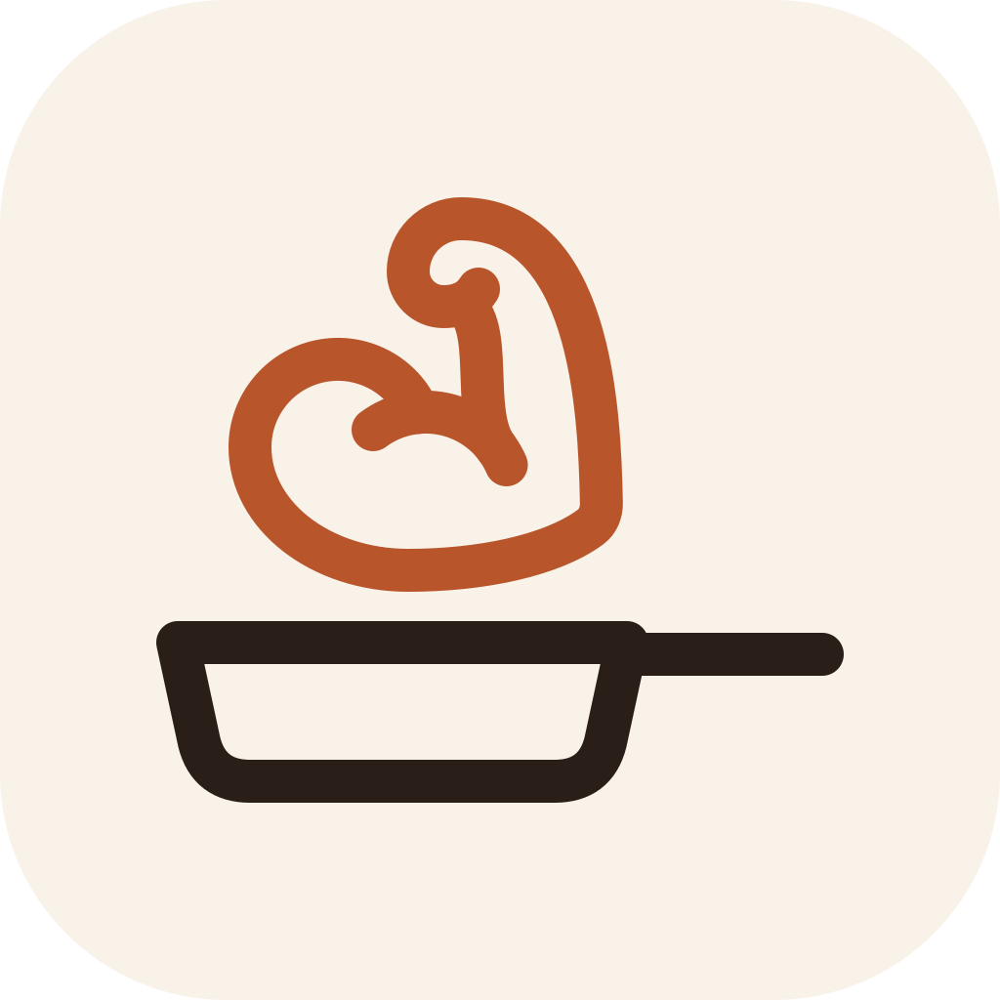
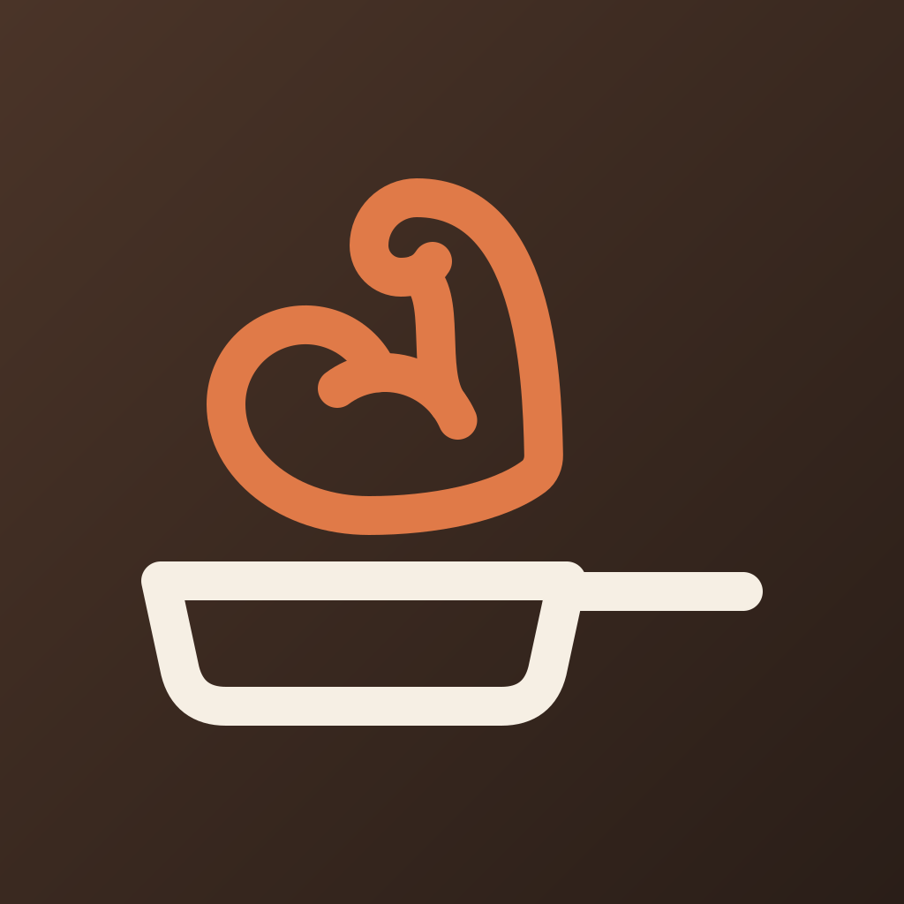
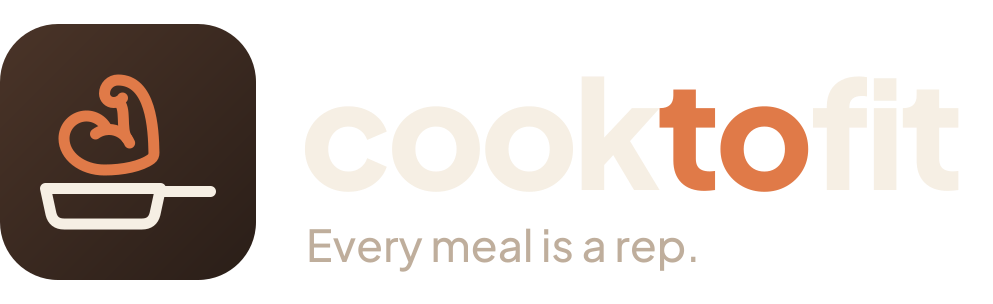
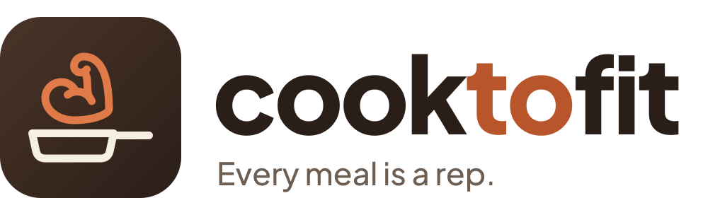
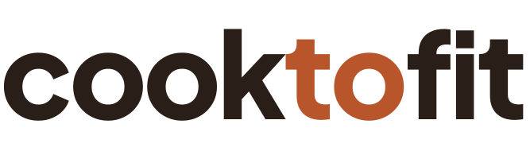
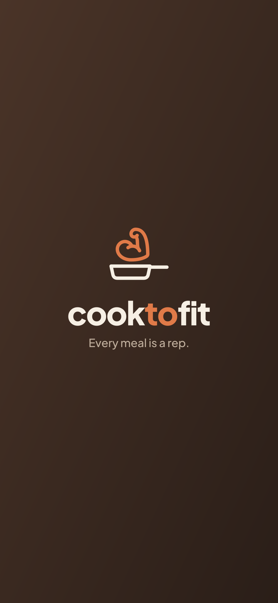
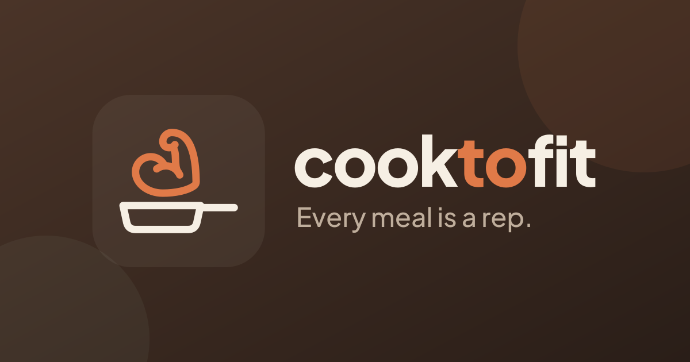
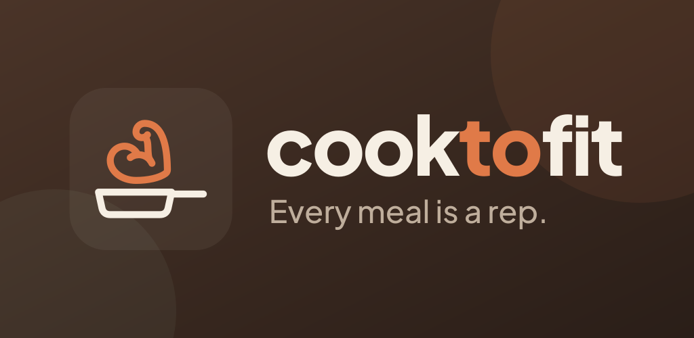

01The idea
CookToFit treats home cooking as training. Every meal you cook is a rep toward your goal, and the app is the coach that plans the set (what to cook with what you have), spots your form (photo logging) and tracks progress (macros & micros).
Warm
It's a home kitchen, not a lab. Espresso and terracotta feel like cast iron, clay pots and spice.
Strong
Progress over perfection. The flexed arm rising like steam says that food builds you.
Smart
Calm, precise and explainable. Numbers come from real food data, presented simply.
02The icon: Monoline Flex Pan
A skillet drawn in one confident line. Out of it rises steam that curls into a flexed bicep, so it reads as cooking → strength.
Primary · dark (app icon, splash)

Secondary · light (web, docs, light surfaces)
Construction: 8×8 grid, one 44 px stroke weight, round caps. The dashed circle is the Android adaptive-icon safe zone (66 dp of 108 dp); the adaptive foreground PNG scales the glyph to 66% so it sits fully inside.
Sizes
On an Android home screen (adaptive, circle mask)

CookToFit03Wordmark & lockups
Lower-case cooktofit in Plus Jakarta Sans ExtraBold, −3% tracking, converted to outlines. The middle “to” is terracotta because it's the bridge from cooking to fitness.



Clear space is at least the height of the “k” on every side. The wordmark should not be smaller than 72 px wide on screen.
04Colour
Brand ratio: about 60% espresso/cream, 30% surfaces and 10% terracotta. Sage is for "good/fresh" moments only.
Light mode tokens
#F8F2E9#FFFDF9#EFE5D6#2A1E1814.5:1 AA#6E5E525.6:1 AA#A84A225.1:1 AA#FFFDF95.6:1 AA#4F6F495.1:1 AA#E3D6C3#C25A32#C99230#6F8C60#4F8A5F#4F8A5F#C99230#B3261EDark mode tokens
#1A130F#241A15#30241D#F6EFE416.1:1 AA#BFAE9C8.5:1 AA#E07A486.2:1 AA#1A130F6.2:1 AA#A9C49F9.7:1 AA#3B2D24#E8875A#F2C46D#A9C49F#7DBB8A#7DBB8A#F2C46D#F2867DThe badges are WCAG contrast ratios against the token's background, and every text pair passes AA (4.5:1). In light mode the text primary is darkened to #A84A22; the brighter terracotta stays for graphics only.
05Typography
is a rep.
Plus Jakarta Sans for display and headings, weights 600–800, tracking −2% to −3%.
Inter for UI, body and numbers (tabular figures), weights 400–600. Both fonts are free (OFL).
06In the product
07Applications

Splash screen (1284×2778)

Social / OG banner (1200×630)

Play Store feature graphic (1024×500)
08Voice
| We sound like | A supportive coach who cooks. Short, warm, specific. Uses gym language lightly ("rep", "set", "PR") without bro-talk. |
| Say | “Nice rep. 32 g protein, done.” · “3 of 5 meals logged. Dinner can close your iron gap.” · “Got 20 minutes and a tawa? Here are 3 options.” |
| Avoid | Guilt (“You failed your goal”), diet-culture words (“cheat meal”, “clean eating”), medical claims. |
09Do & don't
Do
- Use the dark icon as the primary mark
- Keep a single line weight when drawing new pictograms
- Use terracotta for the one key action on a screen
- Use the macro colours only for data
Don't
- Recolour the bicep green or blue
- Fill the pan outline or add a drop shadow
- Put the wordmark in all-caps or another font
- Use terracotta text below 18 px on cream (use Clay #A84A22)
10Asset kit
Everything is in this folder: SVG masters, PNG exports in png/ and design tokens in tokens.json. For Expo: icon.png 1024 · adaptive-icon.png (foreground) + background #2A1E18 · monochrome for Android 13 themed icons · splash.png · favicon.png.
Bicep pictogram adapted from Lucide biceps-flexed (ISC licence). Plus Jakarta Sans and Inter are under the SIL Open Font Licence. Run a trademark search for “CookToFit” (IP India classes 9/42/44, USPTO) before public launch.